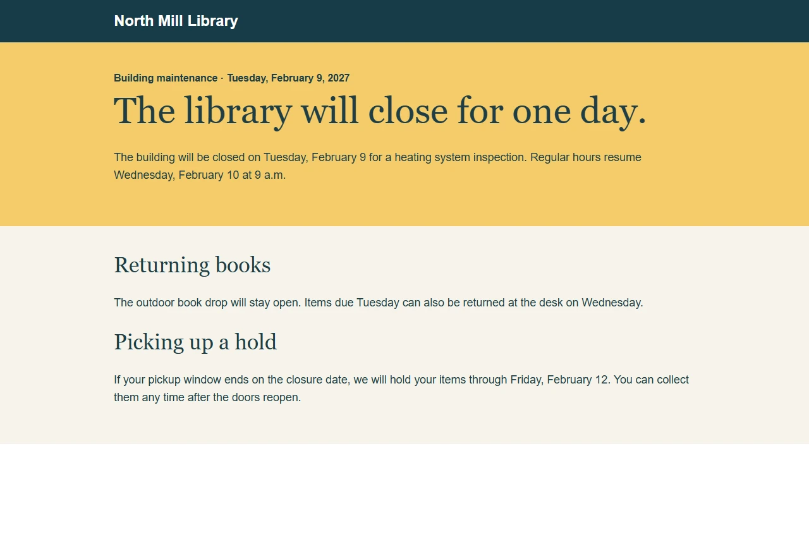
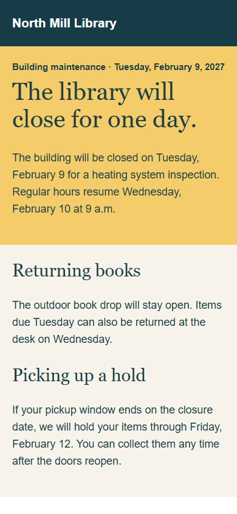

One-day library closure
A template for a fictional public library. Staff can change the closure date, reopening time and pickup arrangements in Elementor using its standard heading and text widgets.
Download the Elementor template (.json)
Import the JSON into your Elementor template library and insert it on a blank page. Update the sample dates and policies before publishing.

View the mobile layout
